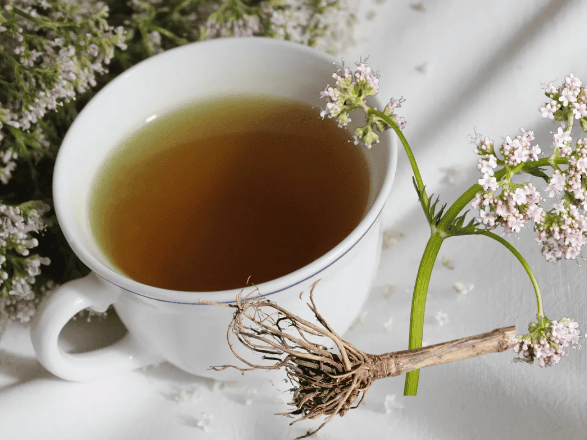

Salud natural, vida mejor
© 2026 PlantasVivas. Todos los derechos reservados Nicolas Merino. nicogdt.ds3@gmail.com
|
Inicio Plantas Sobre nosotros Contacto |
|
|
El poder de la naturaleza en tus manos Descubre las propiedades, usos y beneficios de las plantas medicinales. Un mundo de bienestar natural te espera.
|
"Pequeñas plantas, grandes beneficios" |
| 🌿 Plantas destacadas | Ver todas las plantas → |
|
🌿 Manzanilla Tradicionalmente utilizada para favorecer la relajación y aliviar molestias digestivas.
|
🌿 Hierbabuena Planta aromática utilizada tradicionalmente para apoyar la digestión y preparar infusiones.
|
🌿 Aloe Vera Su gel se utiliza principalmente para el cuidado, hidratación y sensación refrescante de la piel.
|
🌿 Jengibre Utilizado tradicionalmente para ayudar con las náuseas y apoyar la digestión.
|
 🌿 Valeriana Tradicionalmente utilizada para favorecer la relajación y el descanso.
|
|
🌿
Información confiable Información educativa sobre plantas y sus usos tradicionales. |
♡
Bienestar natural Aprende sobre las plantas y su utilización responsable. |
🪴
Conecta con la naturaleza Las plantas forman parte de nuestro entorno y nuestra cultura. |
| Conoce nuestras plantas |
|
🌼 Manzanilla
La manzanilla es una planta aromática cuyas flores se utilizan tradicionalmente en infusiones. Se relaciona principalmente con la relajación y el alivio de algunas molestias digestivas leves. Parte utilizada: flores. |
|
🌱 Hierbabuena
La hierbabuena pertenece a la familia de las mentas. Sus hojas tienen un aroma fresco y característico. Se utiliza tradicionalmente en infusiones y preparaciones alimenticias. Parte utilizada: hojas. |
|
🌿 Aloe Vera
El aloe vera posee hojas gruesas que contienen un gel transparente. Este gel se utiliza principalmente en productos destinados al cuidado de la piel. Parte utilizada: gel de la hoja. |
|
Jengibre
El jengibre es una planta cuyo rizoma se utiliza como alimento y especia. También ha sido utilizado tradicionalmente para aliviar las náuseas y apoyar la digestión. Parte utilizada: rizoma. |
|
🌸 Valeriana
La valeriana es conocida por el uso tradicional de su raíz en preparaciones destinadas a favorecer la relajación y el descanso. Parte utilizada: raíz. |
|
⚠️ Uso responsable
Que una planta sea natural no significa que sea completamente segura. Algunas pueden provocar efectos secundarios o interactuar con medicamentos. Esta página tiene fines educativos y no sustituye la orientación de un profesional de la salud. |
|
🌿 PlantasVivas
Salud natural, vida mejor |
Inicio | Plantas | Sobre nosotros | Contacto |
|
|
© 2026 PlantasVivas. Todos los derechos reservados Nicolas Merino. nicogdt.ds3@gmail.com |
||